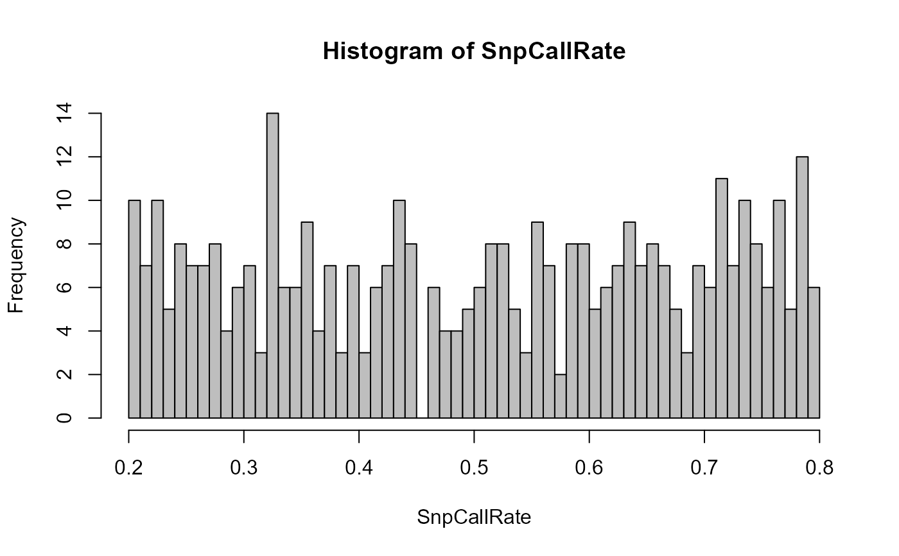
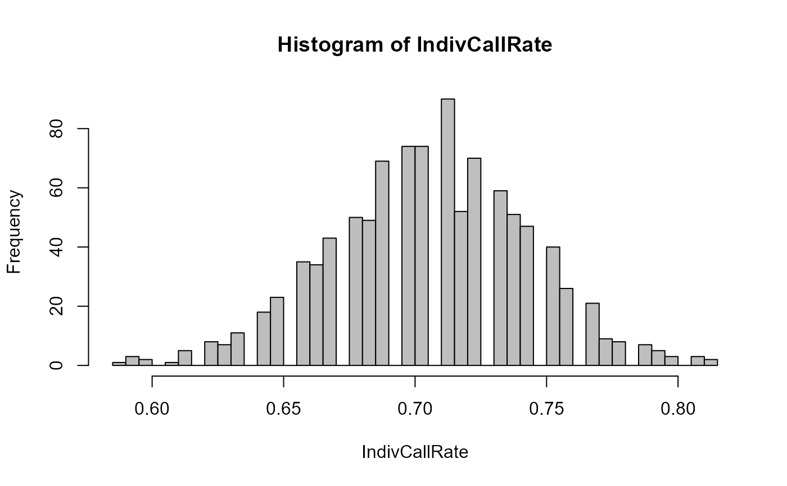

CheckGeno.RdCheck that the provided genotype matrix is in the correct format, and check for low call rate samples and SNPs.
CheckGeno( GenoM, quiet = FALSE, Plot = FALSE, Return = "GenoM", DumPrefix = c("F0", "M0") )
| GenoM | the genotype matrix. |
|---|---|
| quiet | suppress messages. |
| Plot | display the plots of |
| Return | either 'GenoM' to return the cleaned-up genotype matrix, or 'excl' to return a list with excluded SNPs and individuals (see Value). |
| DumPrefix | length 2 vector, to check if these don't occur among genotyped individuals. |
If Return='excl' a list with, if any are found:
SNPs scored for <10
excluded when running sequoia
monomorphic (fixed) SNPs; automatically excluded
when running sequoia. This includes nearly-fixed SNPs with
MAF \(= 1/2N\). Column numbers are *after* removal of
ExcludedSNPs, if any.
Individuals scored for <5 reliably included during pedigree reconstruction. Individual call rate is calculated after removal of 'Excluded SNPs'
SNPs scored for 10 recommended to be filtered out
individuals scored for <50 recommended to be filtered out
Appropriate call rate thresholds for SNPs and individuals depend on the total number of SNPs, distribution of call rates, genotyping errors, and the proportion of candidate parents that are SNPd (sibship clustering is more prone to false positives). Note that filtering first on SNP call rate tends to keep more individuals in.
SnpStats to calculate SNP call rates;
CalcOHLLR to count the number of SNPs scored in both focal
individual and parent.
# \donttest{ data(Ped_HSg5) GenoM <- SimGeno(Ped_HSg5, nSnp=400, CallRate = runif(400, 0.2, 0.8)) # quick alternative: GenoM.checked <- CheckGeno(GenoM)#> Warning: There are 198 SNPs scored for <50% of individuals, it is strongly #> advised to exclude those#> Warning: There are 425 individuals scored for <50% of SNPs, it is strongly #> advised to exclude those#># user supervised alternative: Excl <- CheckGeno(GenoM, Return = "excl")#> Warning: There are 198 SNPs scored for <50% of individuals, it is strongly #> advised to exclude those#> Warning: There are 425 individuals scored for <50% of SNPs, it is strongly #> advised to exclude those#>GenoM.orig <- GenoM # make a 'backup' copy if ("ExcludedSnps" %in% names(Excl)) GenoM <- GenoM[, -Excl[["ExcludedSnps"]]] if ("ExcludedInd" %in% names(Excl)) GenoM <- GenoM[!rownames(GenoM) %in% Excl[["ExcludedInd"]], ] if ("ExcludedIndiv" %in% names(Excl)) GenoM <- GenoM[!rownames(GenoM) %in% Excl[["ExcludedIndiv"]], ] # warning about SNPs scored for <50% of individuals ? SnpCallRate <- apply(GenoM, MARGIN=2, FUN = function(x) sum(x!=-9)) / nrow(GenoM) hist(SnpCallRate, breaks=50, col="grey")GenoM <- GenoM[, SnpCallRate > 0.6] # to be on the safe side, filter out low call rate individuals IndivCallRate <- apply(GenoM, MARGIN=1, FUN = function(x) sum(x!=-9)) / ncol(GenoM) hist(IndivCallRate, breaks=50, col="grey")